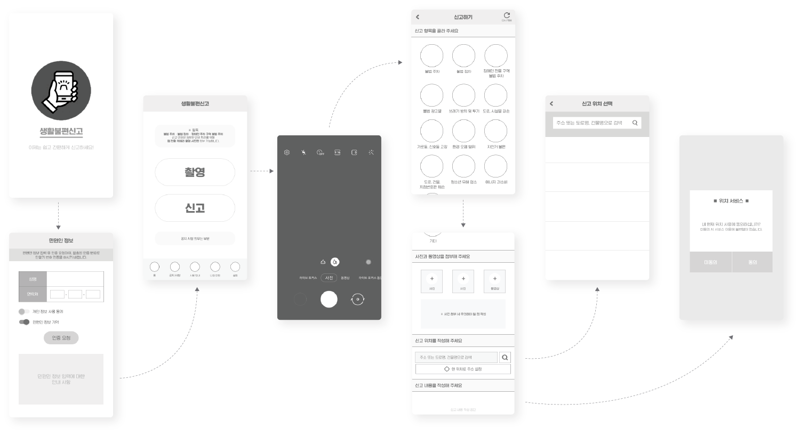
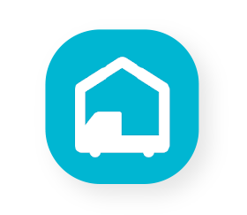
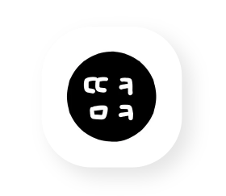

해당 페이지는
PC 화면에 최적화되어 있습니다.
자세한 내용은 PC로 확인해 주세요!
최종 프로토타입 보기 상세 설명 PDF 보기main wireframe & workflow
메인 와이어프레임과 워크플로우
더 많은 와이어프레임과 워크플로우는 여기에서 확인하세요!
PDF 바로 보기design reference
UI/UX 디자인 레퍼런스
-
① 짐싸
· 여기저기 알아볼 필요 없이 손 안에서 쉽고 편리하게 이사 비용을 비교하고, 예약할 수 있는 앱
ㅡ
· 심플한 디자인, 큼직한 설명과 블루 계열의 브랜드 컬러를 활용하여 편안함, 즐거움, 신뢰성 제공
· 간단한 터치만으로 원하는 목표 쉽게 달성

· 배경과 아이콘이 깔끔하여 중요 내용이 잘 강조되고, 아이콘마다 터치 영역이 넓어 오류 가능성이 적음
· 메인 화면에서 터치 한 번으로 주요 기능 페이지 이동 가능하여 초심자도 쉽게 이용 가능함

· 주소 및 짐 정보 입력 시 스크롤을 한참 올리거나 설명이 눈에 잘 띄지 않아 불편함
· 견적 작성 후 뜨는 화면이 전반적인 디자인과 통일성이 떨어짐
-
② 리화이트
· 세탁소에 직접 가지 않아도 스마트폰으로 수거 배달 예약이 가능한 앱
· 편의점·주유소 방문 접수 또한 가능
ㅡ
· 브랜드 컬러와 단색을 적절하게 사용하여 디자인이 조화로움
· 앱 사용 시 GPS 기능으로 사용자에게 편리함 제공
· 메인 화면 및 내비게이션 바에 주요 기능을 배치하고, 앱 사용 방법 제공으로 초심자가 쉽게 이용 가능
· 주의 및 안내 사항을 눈에 띄게 보여 주어 사용자 실수 방지
· 수거 날짜 선택과 수거 시간 선택 디자인 사이 통일성이 떨어지고, 작성 내용 중 날짜 선택 시 일일이 넘겨야 해서 불편함
· 기능에 충실하지 않은 메뉴 이름 사용으로 혼란 야기함
-
③ 땡큐마켓
· 집에서 편하게 중고 물품 거래가 가능한 앱
ㅡ
· 주로 단색과 귀여운 일러스트 아이콘 위주의 사용으로 즐거움과 친근함 동시 제공
· 문의 및 안내 사항을 챗봇 형식으로 제공하여 빠른 피드백 제공
· 사용자가 진행 상황을 실시간으로 알 수 있도록 정보 제공
· 앱 첫 화면에 주요 기능이 확실하게 배치되어 있음
· 한 페이지 내로 제공 가능한 여러 정보를 여러 depth로 나누고, 중복되는 검색 기능을 넣어 혼란 야기함
· 폰트 크기 및 아이콘의 크기가 대체로 작아 실수 위험이 있음
· 굳이 넣지 않아도 될 팝업이 있음
concept
UI/UX 디자인 콘셉트
-
#시원한
민원이 해결되었을 때
속 '시원한' -
#단정한
민원 카테고리가
깨끗하게 정리되어
'단정한' -
#규칙적인
체계적으로 해결되는
과정이 ‘규칙적인’
style guide
스타일 가이드
basic mobile
Android (360dp X 740dp)
가장 높은 점유율과 타깃층인 30-50대가 가장 많이 사용하는 기기
color
#003473
#B9B9B9
#F9FAFB
#000000
font
Noto Sans KR Regular / Medium / Bold
언제나 / 국민의 곁에 / 생활불편신고
icongraphy
final prototype
최종 프로토타입
review
디자인의 전반적인 부분을 이끌면서 각자 가지고 있는 생각과 디자인을
모두 반영하여 하나의 결과로 도출하는 것은 큰 숙제였습니다.
또 고민을 거듭하면서 저도 모르게 점점 기준을 페르소나나 유저가 아닌
'내가 보기 좋은 것', '내가 쓰기 편한 방식'으로 두고 사고하며 초점을 잘못 잡고 헤매었습니다.
하지만 UI/UX의 목적과 팀원들과 함께 소통하고 팀의 최종 목표를 상기시키며
올바른 기준을 확립하고 나니 문제를 풀어가는 과정이 마냥 어렵지만은 않았습니다.
그렇게 프로젝트를 진행하며 저는 타인과 하나의 팀이 되었을 때 원만하게 소통하는 법과
다양한 의견을 모아 올바른 기준으로 하나의 목표를 향해 차근차근 나아가는 법을 배울 수 있었습니다.
전체 디자인 및 최종 프로토타입은 여기에서 확인하세요!
최종 프로토타입 보기 상세 설명 PDF 보기뚝딱뚝딱
뚝딱뚝딱